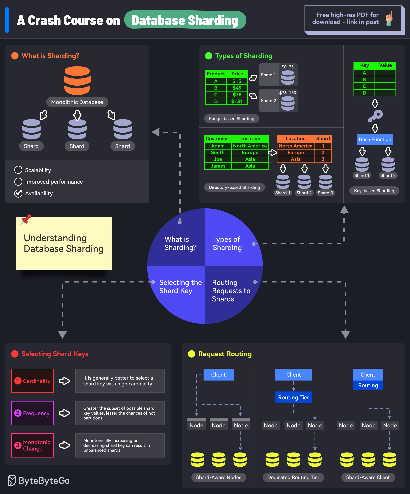

Database sharding is a type of database partitioning that separates very large databases into smaller, faster, more easily managed parts called data shards. The word shard means a small piece of something bigger.
Sharding is also known as horizontal partitioning. Each shard contains a portion of the data, and all shards together contain all of the data.
Sharding is implemented to solve these problems:
Too much data on one machine: A single database server can only handle so much data.
Too many requests on one machine: A single database server can only handle so many requests.
High Latency: As data grows, query latency increases.
Sharding involves splitting a database into multiple, independent parts (shards) and distributing them across different servers or machines. Each shard contains a subset of the data, and all shards collectively hold the entire dataset.
A sharding key is a column in the database table that determines how the data is distributed across the shards. The sharding key is used by the sharding algorithm to determine which shard a particular row of data should be stored in.
The sharding algorithm is the logic that determines which shard a particular row of data should be stored in. The sharding algorithm uses the sharding key to make this determination.
Here are some common sharding algorithms:
Range-based sharding: Data is divided into ranges based on the sharding key. For example, users with IDs from 1 to 1000 might be stored in shard 1, users with IDs from 1001 to 2000 in shard 2, and so on.
Hash-based sharding: A hash function is applied
to the sharding key to determine the shard. For example,
shard_id = hash(user_id) % num_shards.
Directory-based sharding: A lookup table (or directory) is used to map sharding keys to shard locations.
Application-level sharding: The application is responsible for determining which shard to use for each query.
Middleware sharding: A middleware layer sits between the application and the database and handles the sharding logic.
Database-native sharding: The database system itself provides sharding capabilities.
Increased Complexity: Sharding adds complexity to the database infrastructure and application code.
Data Distribution: Choosing the right sharding key and algorithm is crucial for even data distribution and performance.
Joins and Transactions: Performing joins and transactions across shards can be challenging and may require distributed transaction management.
Resharding: Changing the sharding scheme after the database has been sharded can be a complex and time-consuming process.